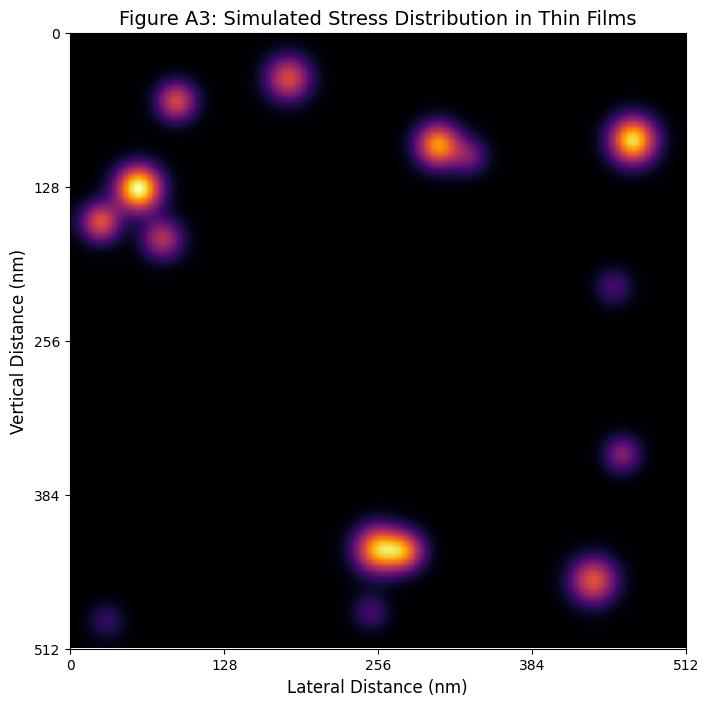
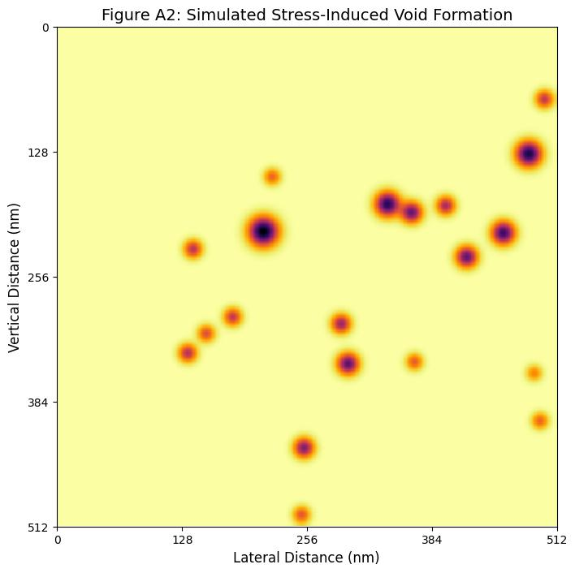

All Categories
6 projects
Modeled endangered populations using Leslie matrices and simulated conservation strategy outcomes.
- Built stage-based matrix model using life-stage survival data from IUCN.
- Simulated population trends under baseline and conservation scenarios.
- Identified juvenile survival as key limiting factor to long-term growth.
- Recommended MPAs and bycatch reduction to improve species viability.
Performed ANOVA and regression on urban vs. rural species diversity using CAP LTER data.
- Analyzed 20+ years of CAP LTER bird data using R statistical tools.
- Compared species richness across habitats using one-way ANOVA.
- Performed linear regression to identify temporal biodiversity trends.
- Discussed conservation implications for urban planning policies.
TEM for Thin Films
Used microscopy and FEA to study grain boundaries, voiding, and delamination in thin-film semiconductors.
- Performed TEM-based structural analysis of advanced thin-film materials.
- Simulated stress-induced void formation using FEA and Python modeling.
- Visualized defect evolution under strain using SciPy and Matplotlib.
- Proposed improvements to fabrication processes based on findings.


Explored ethics of solar innovation, data transparency, and conflicts of interest in green tech.
- Evaluated transparency issues in perovskite efficiency claims.
- Reviewed funding conflicts in industry-academic solar research.
- Recommended best practices for ethical materials data reporting.
- Reflected on societal responsibility of emerging solar technologies.
Designed a water pitcher with plastic-eating enzyme membrane and validated filtration performance.
- Integrated PETase enzyme to degrade microplastics in water samples.
- Prototyped reusable mesh filter with enzymatic plastic breakdown.
- Tested filtration efficiency through lab-based particle retention studies.
- Aligned project goals with UN Sustainable Development Goal 6.6.
Modeled biodiversity and access in Tempe, AZ using GeoPandas and open street map data.
- Mapped green spaces in Tempe using Python GIS libraries (GeoPandas, OSMnx).
- Analyzed species diversity and ecological benefits across city zones.
- Visualized carbon sequestration and air quality improvement metrics.
- Built interactive dashboards to support sustainable urban planning.